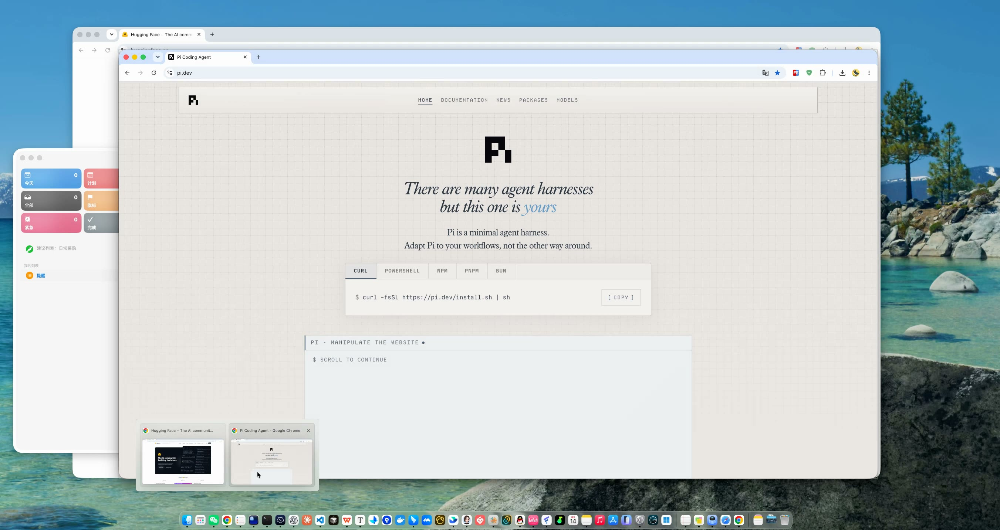
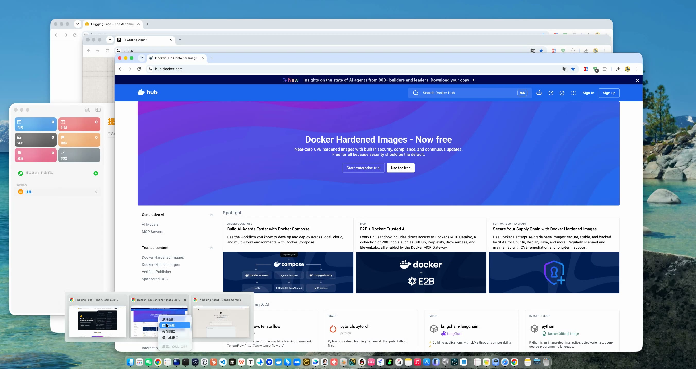
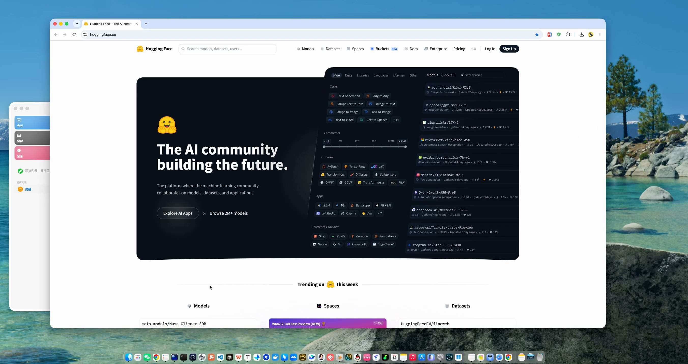

Windows 任务栏
悬停预览窗口 → Dock 窗口速览
Windows 任务栏可以悬停查看同一应用的窗口。Dock Window Quick Look 将这个交互带到 macOS：停在 Dock 图标上，查看窗口、切换前景并使用当前可用的窗口操作。
Windows → macOS
把 Windows 上顺手的桌面功能，带到 Mac。
zongMacTools 将 Windows 用户熟悉的高频桌面交互，按照 macOS 的系统习惯重新实现。不是复制界面，而是把值得留下的体验做成真正像 Mac 的工具。
向下滚动，看看哪些 Windows 体验已经来到 Mac。
Windows → macOS
Windows 上有些高频交互已经证明好用；zongMacTools 挑选其中值得带来的部分，遵循 macOS 的窗口、权限和交互习惯重新实现。
Windows 任务栏
Windows 任务栏可以悬停查看同一应用的窗口。Dock Window Quick Look 将这个交互带到 macOS：停在 Dock 图标上，查看窗口、切换前景并使用当前可用的窗口操作。
Windows 资源管理器
资源管理器空白处右键新建文件，是一个熟悉的工作流。我们正在把它按照 Finder 的使用方式重新实现。
Windows 体验迁移 · 已实现
已实现
Windows 任务栏可以悬停查看应用窗口。现在，停在 macOS Dock 上正在运行的应用图标，也能查看当前窗口并快速切换。
交互预览 · 展示窗口预览、切换和操作路径
按步骤看看这个熟悉交互如何来到 Mac：
步骤 1 / 4
停在 Dock
指针停在正在运行的 Dock 应用图标上。
不承诺实时预览、跨 Space 窗口、恢复最小化窗口或多显示器行为；这些边界以 GitHub 发行详情为准。
迁移后的真实运行画面
本地录屏
下面的本地录屏展示 Windows 用户熟悉的窗口预览如何在 macOS Dock 上工作，覆盖停在 Dock、预览出现、选择窗口卡片与打开右键窗口操作菜单。




下一项 Windows 体验
开发中
Windows 资源管理器可以在文件夹空白处右键新建文件。我们正在把这个工作流按照 Finder 的方式带到 macOS；目标是在 Finder 中直接创建 Markdown、JSON 等常用本地文件，进展会在 GitHub 公布。
在 GitHub 探索项目获取区
公开测试版的下载、版本和安装说明都在 GitHub Release 中提供。需要获取最新版本时，请直接打开 GitHub 发行详情。
正在检查最新公开版本…
完整安装、校验、签名、权限引导与已知限制，请以 GitHub 发行详情为准。